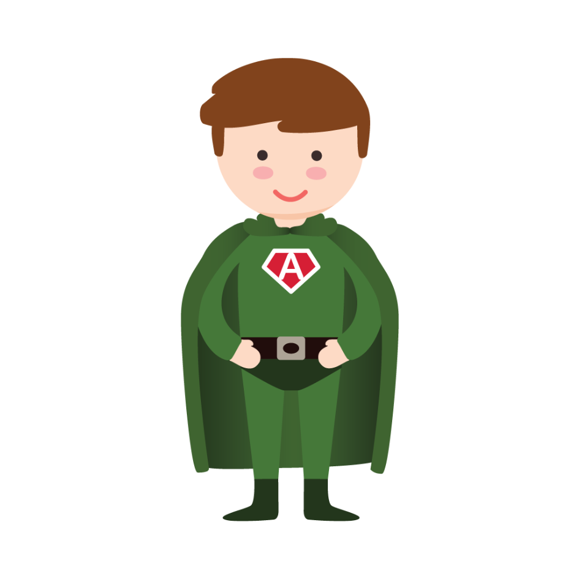
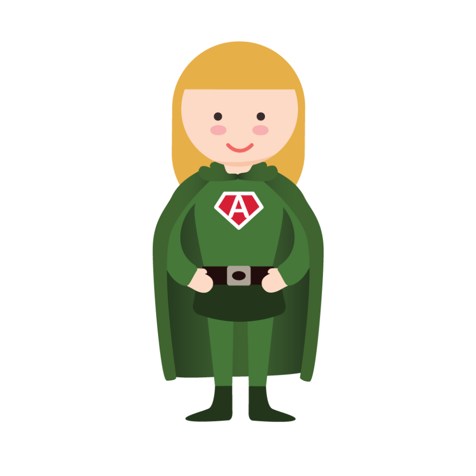
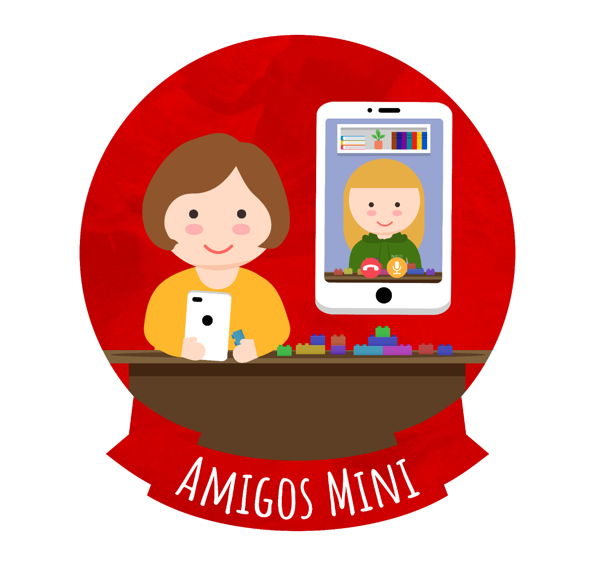
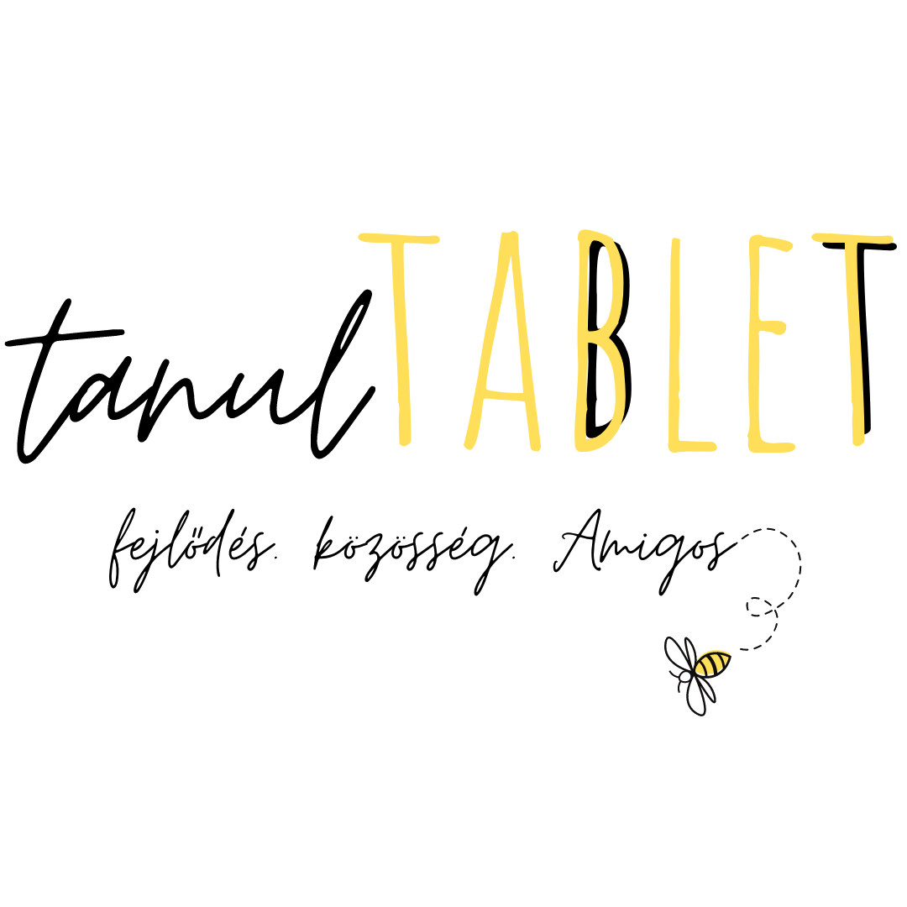
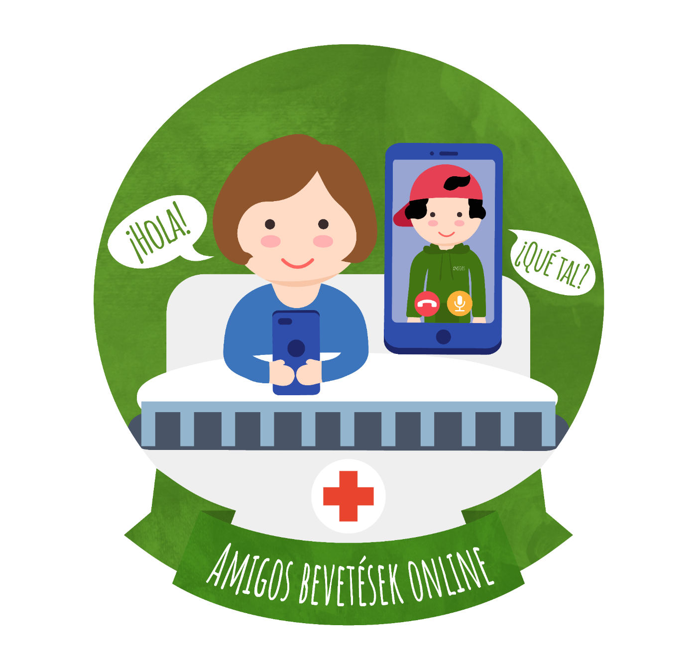

Főoldal / Gyerekek és szülők
Családoknak
Szülőknek
Gyerekeknek — Kalandozz!
Röviden: semmi kötelező. A gyerek dönti el, hogy van-e kedve, és hogy mihez. Ez az oldal két részből áll — az első a szülőknek szól, a második a gyerekeknek.
Közös játék egy heti foglalkozáson

Szülőknek
Egy foglalkozás, lépésről lépésre
Heti egy alkalom, kb. két óra. Az Amigo mindig ugyanaz a személy, mindig bemutatkozik, és mindig az ápolókkal egyeztet, mielőtt bekopog.
01
Bejelentkezés
Az Amigo az osztályon jelentkezik be, és az ápolókkal egyeztet, kihez mehet be aznap.
02
Kopogás
Megkérdezi a gyereket, van-e kedve. A nem is válasz — és semmit nem befolyásol.
03
Együtt töltött idő
Játék, beszélgetés, tanulás, LEGO, rajz — amit a gyerek választ. Az ágy mellett is működik.
04
Elköszönés
Megbeszélik, mikor jön legközelebb. Ugyanazon a napon, ugyanabban az időben.
Amit jó tudni
Fotók, adatok, kihez fordulhatsz
A gyerekek méltósága az első. Ezek a szabályok minden Amigóra, minden osztályon érvényesek.
Adatkezelési tájékoztató →
Fénykép csak írásos hozzájárulássalÉs akkor is úgy, hogy a gyerek ne legyen azonosítható. A hozzájárulás bármikor visszavonható.
Nevet, diagnózist nem kérdezünk és nem tárolunkAz Amigók nem egészségügyi dolgozók. Amit a gyerek magáról elmond, az köztük marad.
Minden Amigo képzett és kísértFelvételi, Amigos Akadémia, Senior Amigo. Az első alkalmakra nem megy be egyedül.
Van, akihez fordulhatszMinden osztálynak saját Amigo-felelőse van. Kérdéssel, visszajelzéssel őt keresd — az elérhetősége az osztályon ki van függesztve.
Innentől a gyerekeknek szól


Szia! Mi vagyunk az Amigók.
Kalandozz velünk!
Játékok és kalandok azokra a napokra, amikor nem lehet felkelni az ágyból. Nem kell hozzá semmi, csak te.
Nézd meg, milyen kurzusokkal várunk!
Mind ingyenes, és egyetemista Amigók tartják. Bármikor megállhatsz, és folytathatod.
Kalandor
Ismerd meg öt ország kultúráját egyetemista önkénteseink vezetésével!
Jelentkezem
SzintLépő
Emeld új szintre nyelvtudásod angol, német, francia, spanyol és olasz nyelvekből!
Irány a kurzusok
Mi leszek, ha nagy leszek?
Ismerkedj meg különböző szakmákkal egyetemista önkénteseink tapasztalatain keresztül!
Megnézem a videókat
Kalandozzunk együtt!
Tarts velünk egy utazáson, ahol felfedezheted országok hagyományait és ételeit!
Kalandra fel
Ezeket hozzuk magunkkal
Ha egy Amigo bekopog, valamelyik biztosan a táskájában van.
Amigos Mini A legkisebbeknek: mesék, bábok, puha játékok.
TanulTablet Hogy a suli ne maradjon le — de játékosan.
Amigos Online Ha nem tudunk bemenni, videón is játszunk veled.